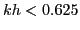

Efficient solution of the indefinite Helmholtz equation remains a challenge for multigrid based numerical solution techniques. Multigrid preconditioning techniques based on the complex shifted Helmholtz operator exist, which we exploit in this work. We deal with specific Helmholtz equations, arising out of applications from particle physics. Accuracy requirements constraint the maximum mesh size to obey  limit. In our model Helmholtz equations, the wave number has spatial dependence, which allows us to restrict the maximum mesh size limit to certain spatially chosen areas within the domain; elsewhere we discretize with larger mesh sizes. In this talk we demonstrate multigrid preconditioning based solution of these equations. The emphasis is on the L-shaped coarsening techniques developed for such locally refined grids, which allow standard coarsening throughout the domain, in contrast with existing MLAT techniques, which (usually) only coarsen in the refined subdomain. This multigrid method is based on the simplest possible components, and the resulting convergence is good. We present the obtained results in this talk.